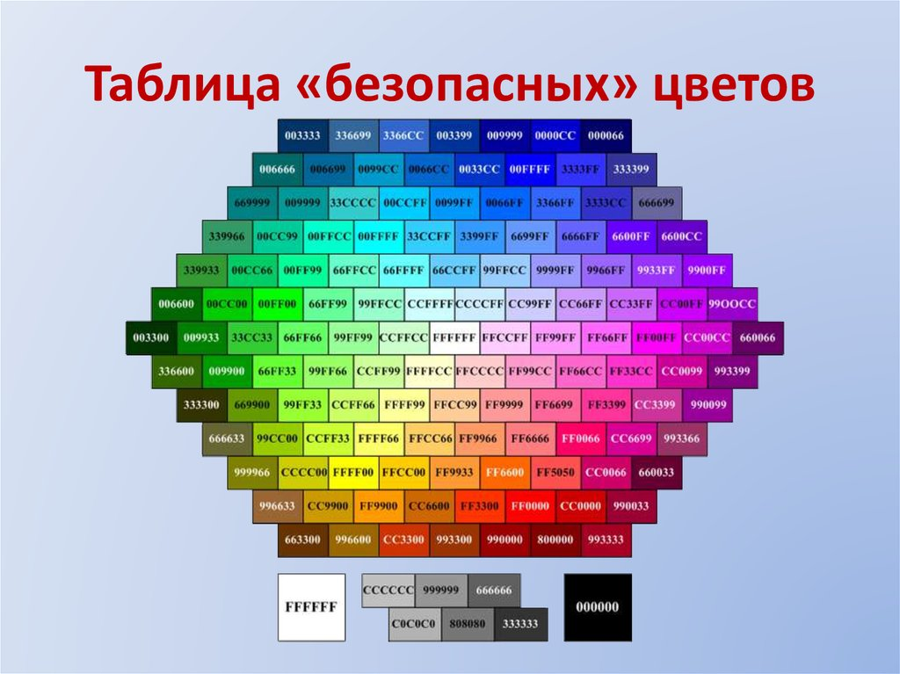

При создании изображения для публикации в сети главной проблемой является правильная передача цвета на разных типах мониторов и в разных браузерах. Когда браузер не в состоянии правильным образом передать тот или иной цвет, он подбирает похожий или смешивает несколько соседних цветов. В результате пользователь на своем экране может увидеть совсем не то, что хотел изобразить автор. В таких случаях и нужна палитра "безопасных цветов". Используя эти цвета при вёрстке, мы можем быть уверены, что на любом устройстве они будут показаны так, как мы и задумывали, без подмен и искажений.
